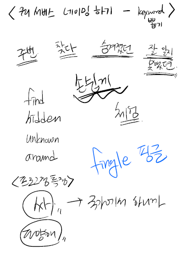

서비스 네이밍

서비스 특징들을 keyword로 뽑아보았다. 둥글둥글 하면서도 친근한 느낌의 이름을 짓고 싶었다.
그 결과 나온 우리 서비스 이름 : 체다
슬로건은 체험을 찾다.
필요한 기능
네이버 지도 API를 사용하기로 결정함
1. 마우스로 움직여도 관악구를 넘어가지 않도록 지도를 제한해서 보여준다.
2. 관악구 district를 표시한다.
3.
핀으로 장소를 눌렀을 때 Zoom-in
4. 지도 밑에 장소 카드를 눌렀을 때 핀이 선택되게 하기.
To-Do
| 혜선 | 기성 | 공통 |
|
1. 로고 디자인 2. UI/UX 소스 찾기 |
1. 네이버 지도 API로 해당 기능 구현 |
1. git repository 기본 설정하기 2. TIL 작성 3. 회의록 작성 4. 디테일한 화면 레이아웃 구성 |